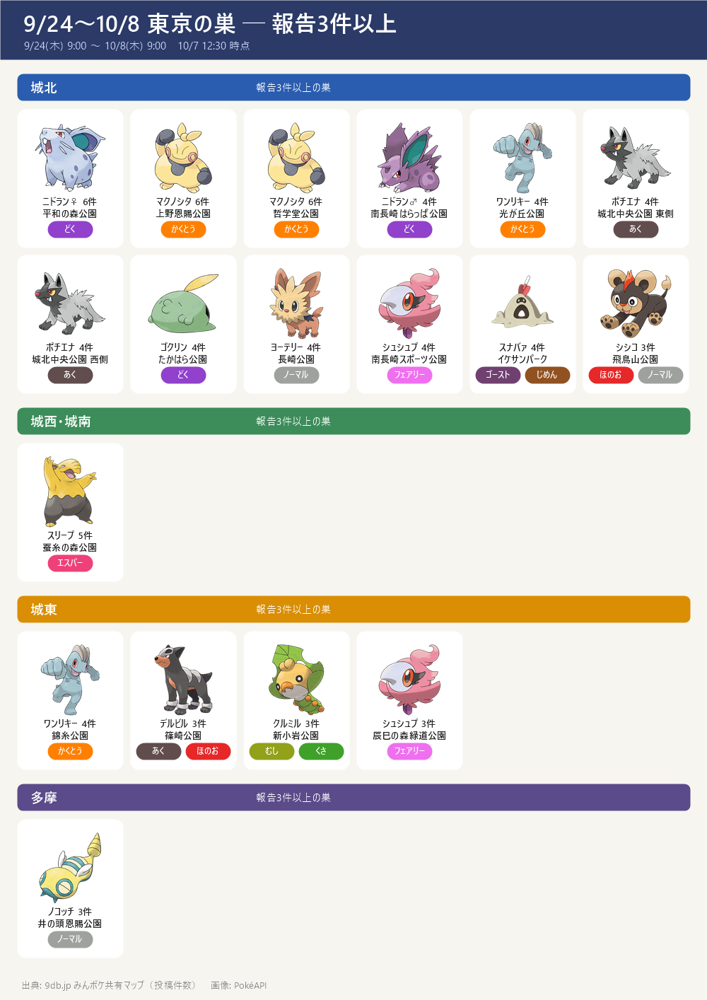

- 9db（みんポケ共有マップ）の東京都の巣：36種・のべ96か所・報告158件（10/7 12:30 に取得。3件以上の巣は18か所）
- 期間：9/24(木) 9:00 〜 10/8(木) 9:00（隔週木曜に入れ替わり・9db の開催一覧）。入れ替わり直後は報告が少ないので、数日おきに更新して育てる
- 見方：件数＝その場所で見たという投稿の数。3件以上はほぼ確実、1件だけの巣は見間違いや一時的な出現のこともある。件数は人の多い公園ほど増えやすい
- この期間は 10/8(木) 9:00 で終了（記録として残す）
- まとめて回るなら中野〜南長崎：平和の森公園（ニドラン♀ 6件）→ 哲学堂公園（マクノシタ 6件）→ 南長崎はらっぱ公園（ニドラン♂ 4件）・南長崎スポーツ公園（シュシュプ 4件）・豊島区立長崎公園（ヨーテリー 4件）。確かな巣が5つ、直線でおよそ3km の範囲。▶ 徒歩ルートを Google マップで開く。足を延ばせばイケサンパーク（スナバァ 4件）
- ほかに確かな巣：上野恩賜公園（マクノシタ 6件）・城北中央公園（ポチエナ 東西各4件）・蚕糸の森公園（スリープ 5件）・光が丘公園と錦糸公園（ワンリキー 各4件）
- 同じ公園に2種：篠崎公園・猿江恩賜公園・中野四季の森公園・こどもの広場公園は、公園の中の区画で巣が分かれている
- 色違い：36種が色違いの出るポケモン（9db の色違いマーク）
- 天気でブースト（その天気のとき出やすく・強くなる）：雨＝アゴジムシ・エモンガ・キャタピー・クルミル・ケムッソ・コイル・コダック・シママ・フシデ・ミツハニー・ヤンヤンマ／曇り＝ゴクリン・シュシュプ・スカンプー・ニドラン♀・ニドラン♂・ヌイコグマ・ピッピ・フシデ・マクノシタ・ワンリキー／強風＝エモンガ・ケーシィ・スリープ・タマタマ・バネブー・ミツハニー・ヤンヤンマ／雪＝コイル・ユキカブリ／晴れ＝クルミル・サイホーン・シシコ・スナバァ・タマタマ・デルビル・ドンメル・モグリュー・ユキカブリ／ときどき曇り＝サイホーン・シシコ・チラーミィ・ヌイコグマ・ノコッチ・ヨーテリー／霧＝スカンプー・スナバァ・デルビル・ポチエナ・ムウマ
報告3件以上の巣

エリア別の全リスト
- ■城北（中野・豊島・練馬・板橋・北・上野） 19か所
- マクノシタ：上野恩賜公園(6)・哲学堂公園(6)
- ポチエナ：城北中央公園 東側(4)・城北中央公園 西側(4)
- ニドラン♀：平和の森公園(6)
- ニドラン♂：南長崎はらっぱ公園(4)・中野四季の森公園(1)
- スナバァ：イケサンパーク(4)・中野四季の森公園 イベントエリア(1)
- ワンリキー：光が丘公園(4)
- ゴクリン：たかはら公園(4)
- ヨーテリー：豊島区立長崎公園(4)
- シュシュプ：豊島区立南長崎スポーツ公園(4)
- シシコ：飛鳥山公園(3)
- モグリュー：おとめ山公園(2)
- ケーシィ：南池袋公園(1)
- タマタマ：徳殿公園(1)
- ケムッソ：江古田の森公園(1)
- エモンガ：江原公園(1)
- ■城西・城南（杉並・世田谷・目黒・大田） 16か所
- スリープ：蚕糸の森公園(5)
- フシデ：中目黒公園(1)・和田堀公園ゲートボール場(1)・東山公園(1)
- デルビル：世田谷公園(1)・中根公園(1)
- ピッピ：二子玉川公園(1)
- サイホーン：下高井戸おおぞら公園(1)
- ヤンヤンマ：こどもの広場公園 西側(1)
- ケムッソ：砧公園(1)
- ドンメル：善福寺川公園(1)
- スカンプー：蘆花恒春園(1)
- シママ：こどもの広場公園 東側(1)
- モグリュー：柏宮公園(1)
- チラーミィ：田園調布せせらぎ公園(1)
- アゴジムシ：大蔵運動公園(1)
- ■都心・湾岸 9か所
- ケーシィ：潮風公園(1)
- コイル：新宿御苑(1)
- タマタマ：新宿中央公園(1)
- ムウマ：代々木公園(1)
- バネブー：北の丸公園(1)
- スカンプー：日比谷公園(1)
- ユキカブリ：浜離宮恩賜庭園(1)
- シシコ：皇居外苑(1)
- ヌイコグマ：お台場海浜公園(1)
- ■城東（江東・墨田・江戸川・葛飾・荒川） 19か所
- ワンリキー：錦糸公園(4)・大島小松川公園 わんさか広場(1)
- クルミル：新小岩公園(3)・水元公園(2)
- デルビル：篠崎公園(3)
- シュシュプ：辰巳の森緑道公園(3)
- コイル：猿江恩賜公園 南側(1)・辰巳の森緑道公園 西側(1)
- スリープ：海の森公園(1)・葛西臨海公園(1)
- ヤンヤンマ：辰巳の森海浜公園(2)
- キャタピー：アクロシティ庭園(1)
- タマタマ：亀戸中央公園(1)
- ノコッチ：高砂北公園(1)
- シママ：葛飾あらかわ水辺公園(1)
- モグリュー：猿江恩賜公園 北側(1)
- フシデ：汐入公園(1)
- エモンガ：篠崎公園(1)
- スナバァ：にいじゅくみらい公園(1)
- ■多摩 33か所
- タマタマ：大塚公園(1)・清瀬金山緑地公園(1)・西河原自然公園(1)・野川公園(1)
- ノコッチ：井の頭恩賜公園(3)・北山公園(1)
- ミツハニー：都立狭山公園(2)・一本杉公園(1)・上之根公園(1)
- ニドラン♀：多摩中央公園(1)・桝形公園(1)・秋留台公園(1)
- スナバァ：富士森公園(2)・小平市立中央公園(1)
- コダック：東村山中央公園(2)
- ゴクリン：芹ヶ谷公園(1)・草花公園(1)
- ヨーテリー：乞田・貝取ふれあい広場(1)・片倉城址公園(1)
- シュシュプ：武蔵野の森公園(1)・立川公園(1)
- アゴジムシ：仲田の森蚕糸公園(1)・武蔵野公園(1)
- キャタピー：府中の森公園(1)
- コイル：町田中央公園(1)
- デルビル：小金井公園(1)
- ポチエナ：豊ヶ丘北公園(1)
- ケムッソ：東大和南公園(1)
- バネブー：日野市民の森スポーツ公園(1)
- シママ：町田シバヒロ(1)
- フシデ：立野公園(1)
- エモンガ：上仲原公園(1)
- ヌイコグマ：殿ヶ谷戸庭園(1)
出典: 9db.jp みんポケ共有マップ（東京都の巣・投稿件数）。他サイトとは照合していない
画像: PokéAPI